1928—The New-Way Course in Millinery and Hat Design
Lesson 1—Equipment
A Few Words of Interest Before you Begin
You are about to begin the study of hat-making—a study as fascinating as it is useful. To the woman or young girl who takes up this study seriously, a wealth of valuable information is offered—information that will not only enable her to make beautiful hats for herself and for her friends, but that will actually lay the foundation of an accomplishment, a profession, that will enable her to earn a profitable livelihood should it ever become necessary.
There are a great many people who have the mistaken idea that the ability to make pretty hats is inherent. To them, a designer of hats is born, not made. The colorful hat with its artistic folds and curves, its delicate finish and smart trimmings, seems to be a mystery. Yet it is very well known by those who understand the art of millinery design that the girl or woman who studies the technicalities of hat-making is able to make a much prettier and much more becoming hat than the "born milliner" who knows nothing of such things as harmony, line, color and construction.
For a long time—too long, in fact—millinery has been confined to what is known as "the trade." The woman in the home was compelled to pay a high price for the French creation that, if she but knew how, could be duplicated almost exactly at a fraction of the cost. Hat-making was kept a mystery—just as dressmaking was kept a mystery for a long time. But just as the secrets of fashionable dressmaking have been revealed to the woman in the home, so now are the secrets of millinery revealed to the woman who wishes to make her own pretty hats.
In these pages, millinery is taught as a science. From all the methods used, have been gathered the most practical, simple and easy-to-follow methods. But everything has been brought down to its simplest, most complete and compact form. Instead of burdening the student with a great deal of unessential and hindering detail, the making of hats has been reduced to a series of steps which, if followed carefully, will make the study of millinery fascinating and interesting.
The student must remember, however, that the mere reading of the text will not suffice. All work must be practiced until it is perfect. All methods must be practiced until the student is deft and quick. To insure proficiency and accuracy the student must practice constantly, and master each detail before proceeding to the next step.
The Two Branches of Millinery
There are two definite branches of millinery that the student must master before she can consider herself an actual milliner. The first of these is the construction, or the composition. This consists of the technical process of hat construction—from the making of the wire frame or buckram frame to the final trimming touches. This phase of the study of millinery is particularly important, for upon it depends the symmetry and lines of the hat, the charm and attractiveness of it. It also represents the major part of millinery, for it entails the studying of various methods—of stitches, linings, fittings, trimmings, etc. The first lessons of the text are devoted almost entirely to the construction branch of millinery.
The other branch of millinery is design. Design is the art of the work. Design teaches you how to combine colors harmoniously, how to achieve the just-right angle or curve, how to carry out a certain costume idea in the hat. To evolve the design requires a certain amount of natural ability, although constant practice and a sincere effort will make it possible for anyone to create hat styles that are distinctive and beautiful. Millinery design is taught later in the text—for, after all, you must know how to make a hat, how to construct the frame, apply the straw or material, add the trimmings and finishing touches, before you are able to carry out any ideas you may design.
Throughout the first lessons you will find much to help you with your final work on design. Apply yourself earnestly to your lessons. Master each one thoroughly before proceeding to the next. Millinery is an important and dignified profession—one any woman may be proud of—and the more seriously you apply yourself to your work, the more adept and clever you will be in the creating and constructing of beautiful hats.
One thing more: Millinery is extremely wide in its scope. Indeed, there are some millinery experts who insist there is no end to the teaching of the art of hat-making! In this respect it is not unlike any other branch of education. However, although each season brings new hat modes, new types of trimmings and new materials, once you have mastered the two branches, hat construction and hat design, you will be able to follow the millinery fashions without the least trouble. These new methods are really nothing more or less than new adaptations of old methods—and once you have mastered the technical methods taught in this course, you will be able to carry out the style ideas of every season.
Origin of the Word "Millinery"
In the lessons we are going to endeavor to teach you, in as simple and understandable a method as possible, all there is to know about the art of millinery, so that by the time you have completed them all you will be an expert. As a student of millinery, you will undoubtedly want to know the origin of the word.
Ever since the early ages, the city of Milan has been famous for its ribbons and silks. Isn't it but natural, then, that this city should play a large part in the development of hat-making? It was in Milan that a gentleman first conceived the idea of creating various different types of hats for various different types of women. At first, in those early ages, all women wore the same kind of headdress, which was really a miniature shawl. In Europe, the gentleman of Milan was spoken of as "the Milaner." And from "Milaner" (a gentleman of Milan) we have our own word "millinery."
Words have their origin in many strange ways, but millinery has quite an exalted origin in Milaner—for it does justice to that beautiful old town where millinery in its true sense first had its inception.
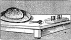Equipment for Millinery
Let us now consider the necessary equipment you will require as a student of millinery. Just as a good workman needs correct tools, just as the dressmaker needs her shears, her threads, her dress form—so will you, as a milliner, need certain things with which to do your work.
If you expect to take up your work seriously and to make hats for yourself almost from the start, you should have one room which you can devote entirely to your work. Perhaps you already have a sewing room. Clear away one part of it, and prepare it for your millinery work. You will need a comfortable chair, low enough to permit the feet to rest squarely on the floor. The table should be fitted with a small piece of hardwood, attached to the table in the form of a rack. Into this wood have a half-dozen wire nails (without heads) driven, and use them to hold spools of cotton and silk.
Following are the articles the millinery beginner will need. This equipment is gauged from the lessons of this text. If you expect to do work not required by the lessons, you may need other things—such as colored thread, ribbon, etc.
Needles: A long needle, known as the milliner's needle, is used a great deal in hat-making. It comes in sizes from 1 to 10, varying according to the fineness of the needle. Needle No. 1 is the coarsest; needle No. 10 is the finest. Darning needles are also used in millinery work. They are used when doing embroidery work with ribbon, chenille or heavy yarns that are too large to be used in the ordinary embroidery needle. Another type of needle frequently used in millinery is the surgeon's curved needle. It is used to attach flowers or leaves to hats that are entirely covered with flowers or leaves. The needle and thread are kept on the under side of the hat, the point of the needle being pushed through the foundation from the wrong side and passing over the stem of the leaf or flower. The needle is then pushed gently and the point will pass through the foundation to the wrong side. When the thread is drawn tight, it will hold the flower in place. Remember this method of sewing on flowers and leaves—it will save you much annoyance and trouble, and will do the work very much prettier and neater than the ordinary needle-and-thread method.
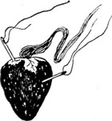Emery Bag: You will find an emery bag very important in millinery work. Moisture from the hands, glue used on trimmings and buckram shapes will cling to the needle and cause it to become rough. The emery bag, used frequently, will keep your needles in good condition for sewing.
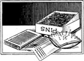Pins: You will find that a flat tray for pins is very much more convenient than one of the old-fashioned cushions. Always keep plenty of pins on hand as they are very essential in millinery. Purchase the usual dressmakers' pins of medium size. They may be had in one-fourth, one-half and one lb. boxes at an economical price.
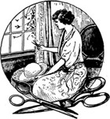Scissors: For millinery use scissors seven and one half to eight inches long, as they are best for all general work. Shears shorter than this are too small, and if larger they are unhandy for doing the work required on the inside of the hat.
Thread: The usual milliner's thread has a softer finish than dressmaker's thread, and comes on a spool of slightly different shape than the ordinary thread. Because it has a softer twist and finish it can be drawn through materials much more easily than the ordinary thread.
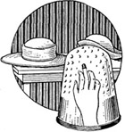Thimble: A thimble is an absolute essential in hat-making. The materials ordinarily used make it practically impossible to sew without one. A silver thimble is the best.
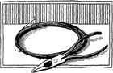Pliers: For cutting wire, use a pair of long nose pliers with the wire-cutting edge at the side. You will find that short-nosed pliers are not very practical for millinery work. A very good pair of pliers is needed, as it has a great many uses and a poor pair will not serve the purpose well.
In addition to the equipment already mentioned, you will need a tape measure and a yard stick. The yard stick is used in measuring materials. The tape measure is very convenient in measuring crowns, brims, etc.
Good light is very essential in millinery work. If you cannot have daylight—plenty of it— see that you have the best artificial light possible. The best position for sewing is with the back against the light, and with the light falling over the left shoulder.
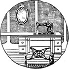Use of the Sewing Machine in Millinery
If you have a sewing machine, you will find it a valuable time and money saver in your millinery work. This is especially true if you have the sewing-machine attachments and use them. The binder, for instance, will enable you to bind edges on ribbon trimmings. The ruffler will enable you to ruffle a crown or brim quickly and easily; and you will be able to make fine plaits or tucks without any trouble whatever.
The most practical use of the sewing machine is in stitching materials together. This saves a great deal of time, if large pieces of material are attached.
The attachments on the sewing machine are wonderful time-savers. For hemming fine materials, there can be nothing to compare with the hemmer attachments. For attaching lace edges, the edgestitcher is ideal, as it does the work more neatly than it could possibly be done by hand—and in very much less time.
Of course, you must learn how to use the attachments before they can be of any real value to you. Your sewing machine dealer will supply you with all attachments to fit your machine, if you have misplaced those that came with it originally, and will demonstrate to you how they are used. Almost all sewing machine companies issue booklets telling how the attachments are used.
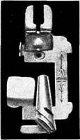Use of the Binder
1. Remove the presser foot from the machine. The presser foot is the foot used for ordinary machine sewing. Now, following the directions in the instruction book that you received when you purchased your sewing machine, attach the binder.
2. Cut your binding on the true bias. If you use small pieces it may be necessary to join them together. Binding may be from one-eighth to three-quarters of an inch in width, according to requirements.
3. Fold the bias strip in the centre lengthwise, and cut a point at the end to permit it being passed easily through the binder.
4. On the binder you will find a scroll. It is through this that the binding must pass until the point comes through the end under the foot. As the binding passes through the scroll you will notice that the edges are turned in automatically—and with an exact mathematical precision which could never be accomplished by hand.
5. The edge upon which the binding is to be applied should be held in the scroll of the binder. This will bring the edge of the material to be bound between the two turned edges of the binding. Proceed to pass it through the binder until it emerges beneath the needle when the stitching is begun. The needle passes through the turned edges of the binding and through the material to be bound, holding all three edges together.
6. Begin to stitch, being sure that the stitching comes close to the edge and that the binding is not allowed to stretch. Be careful to keep the material to be bound well within the binder, otherwise the binding will not be attached firmly to the edge.
7. Continue to feed the material into the binder as quickly as the machine feeds. Do not make the mistake of holding back either material or binding, but allow the material to enter the binder with the same speed as the machine, merely guiding it.
8. 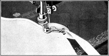When turning a curved edge, urge the material gently around with the fingers of the left hand, being sure that the edge of the material to be bound and the bias binding are all following correctly.
Practice until you master the correct method of binding edges. For instance use the binder to bind the edges on sport hats, and you will find that the stitches add to the beauty of the hat.
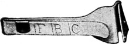The Cutting Gauge and its Use
The cutting gauge is a tiny steel attachment that is used on the end of your scissors. It is used to gauge the width of bias materials cut for various purposes. There are three letters on this gauge—F, B, and C. There is also a slide that can be moved back and forth and set at any of these marks. When it is set at F the strip cut is just wide enough for a facing. When it is set at B it is the proper width to be used in your binder. When it is set at C it is just right for cording. Let us see how the gauge is used in cutting bias folds.
1. Fold the 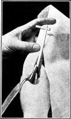material 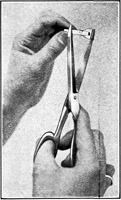on the bias in the following manner. If the material is one yard long and one yard wide, place the selvedge exactly along the cut edge of the material. This will make a fold from one corner diagonally to the other, and if folded in this manner and cut on the fold you will have a true bias. The bias strips are cut from these edges along the fold. Always be careful to cut on a true bias.
2. Place the cutting gauge on the point of the scissors, adjusting it firmly so that it does not fall off while you are cutting the bias strip.
3. Insert the edge of the material in the gauge, bringing the material between the blades of the scissors. Proceed to cut the bias strips.
Illustrated on the next page are the correct and incorrect methods of joining bias strips after cutting them. It is important that you do not make the mistake of joining the strips in the wrong way, as it will spoil the rest of your work. When you have bias strips all ready to join, join the selvedges to the selvedges and the crosswise edges to the crosswise edges. Be sure that the seams are made deep enough to be pressed open flat for use in the binder. Bear in mind always that bias material stretches and that when a bias strip of material is stretched it becomes much narrower and the binder will not work properly.
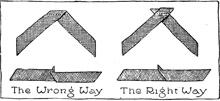In millinery, you will have much occasion to use bias materials and bias bindings. Whatever you have learned in this lesson on equipment will prove of value later in your more advanced lessons.
The Use of the Ruffler
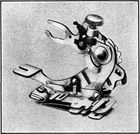Your ruffler attachment offers you numerous means of applying new, distinctive trimming touches to the things-to-wear you make at home. It is one of the most valuable attachments in your box, and reflects a great deal of credit upon the inventors of these remarkable time-and-money saving bits of steel.
The method of using the ruffler attachment varies with different machines. Study the instruction book that came with your machine for the correct method. Then, too, there is the shirring plate, which when adjusted with the ruffler enables you to make quickly and easily many delightful trimmings of shirring and lace.
With your ruffler you will be able to make trimmings that would be very difficult, perhaps impossible, to make by hand. And they will be firm, and even—as no hand sewing could be.
Remember that the use of the attachments saves long tedious hours of hand work, and trimmings may be made that rival hand work for beauty. Use the ruffler and shirring plate to make shirrings for hat facings. The ruffler alone may be used when plaitings are needed as a trimming. Properly adjusted, your ruffler will plait lace, ribbon, silk or silk braid producing a softer, more artistic effect than is possible in any other way.
Experiment with different materials, and you will be surprised at the pleasing effects it is possible to produce with the aid of your sewing machine and its attachments.
Another attachment that will be found valuable in millinery is known as the quilter. Its most common use in this work is for quilting sport hats.
Use of the Quilter
1. Attach your quilting attachment as directed in your book of instructions.
2. Mark on the material the design you intend to make, using colored basting thread or tailor's chalk. The criss-cross pattern is the one most frequently used.
3. Insert the material to be quilted beneath the attachment and stitch on the marked lines.
4. To facilitate the work of the quilter, attach the underbraider foot to your sewing machine. You will find that the work is accomplished much more easily when this foot is attached.
Do not attempt to quilt very thick materials by machine, as you are liable to break your needles, and injure the tension on your machine.
The Underbraider
When making braided hats, or for making braided designs, the underbraider is a wonderful timesaver.
1. The book of instructions which came with your machine will tell you how to attach the underbraider.
2. Thread your underbraider attachment by inserting the braid through the tube.
3. Mark your design on the wrong side of the material, and insert the material under the foot wrong side up.
4. Lower the presser foot to stitch, having the tension of the machine set for an ordinary length stitch.
5. To turn a square corner, raise the presser bar and turn the cloth in the proper direction, lower the bar and proceed to sew. If the needle is allowed to pierce the braid while the turn is being made the material will not pucker.
6. When the braiding is finished, draw the end of the braid through the work by punching a small hole in it, and fasten it with small back stitches.
Suggestions
When making hat shapes of buckram, the lap seams may be stitched down either through the center of the lap or at each edge. In millinery work, seams on such materials as silk, satin, chiffon, georgette crepe, etc., may be stitched by machine. But it is always better to stitch velvet and such materials by hand. Perhaps this information does not seem valuable to you at the moment, as you are just starting on the fascinating study of hat creating, but the technicalities must be mastered before hats can be made— and although you do not find this information of immediate value, remember it so that you can refer to it when it does become valuable, as it will.
The Notebook
The beginner in millinery will find a notebook very useful, indeed. In it she can jot down all the items of interest that are constantly presenting themselves in magazines and newspapers, and also ideas that occur to her in the matter of millinery design.
If you begin a notebook of this kind now, you will find that it has become a very valuable possession by the time the course is completed. Items of interest that may not seem valuable now, may prove invaluable to you later. Start a notebook now—and see how valuable it becomes in a short time.
Important Note to Students
Just as a writer cannot create a masterpiece before he has mastered the language, so the milliner cannot hope to become deft and clever until she has first mastered the ordinary details of sewing, frame-making and frame-covering. These details open the door to successful millinery, just as words and phrases open the door to successful authorship.
Realizing this, we have so compiled this simplified course that long before you have finished it you will know a great deal about the making of pretty hats. It is such fun to make frames and to cover them. You will study all about trimmings and how to make them. Towards the end of the course you are even going to learn how to renovate materials that are too good to throw away. Of course, you will study hat design and the types of hats best fitted to different people. You will be very interested in these millinery lessons, I am just sure—but not only that, you will learn quickly and easily to make your own hats at a great saving.
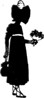LESSON 1
QUESTIONS
1. What are the two definite branches of millinery that must be mastered before a person can consider herself an actual milliner?
2. What is the origin of the word "millinery"?
3. How does millinery thread differ from ordinary sewing thread?
4. Of what use are pliers?
5. What sewing machine attachments are found useful in millinery?